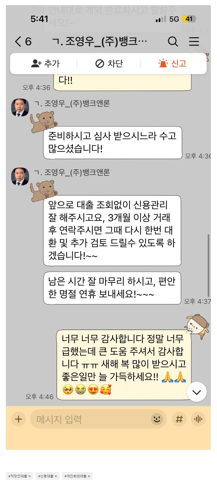

[직장인대출 ] 궁금한점 다 알려주시고 너무 친절하시고 본인일처럼 해주셔서 인상이 깊었어요 / 조영우이사와의 대출후기
직장 : 중소기업
재직기간 : 1년 미만
소득 : 500정도
회생 진행중에도 연락드린적 있는데
정말 성심성의껏 답변해주시고
궁금한점 다 알려주시고 너무 친절하시고
본인일처럼 해주셔서 인상이 깊었어요
회생중에는 제 조건이 안좋아서 대출안됐지만 그후에 면책되고 다시 이사님께 대출가능한지 연락드렸어요
너무 급한 상황이었는데 제2금융권에서는 대출이 다 거절되었는데 이사님이 알아봐주셔서 생각한만큼 금액 다받을수 있게 됐어요
관리 잘해서 금리인하 받을수 있게 다시 또 연락드리기로 했어요
정말 너무너무 감사드립니다 ㅠㅠ 복 받으세요 ㅠㅠ

https://cafe.naver.com/cityman88/310148